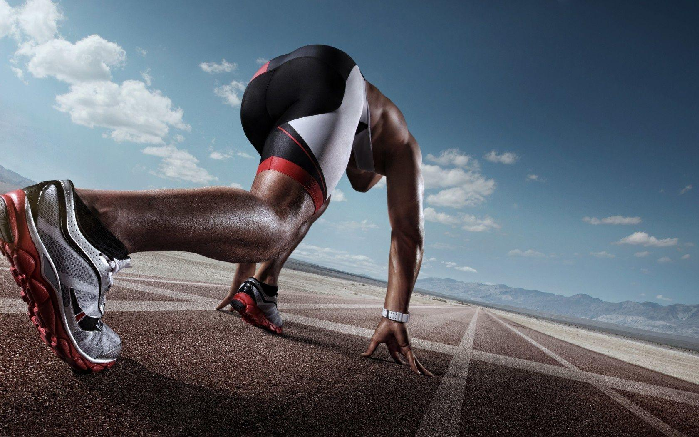

Running Training
Running is a high-intensity cardio exercise that helps improve cardiovascular health, increase stamina, and burn calories effectively.
- Improves cardiovascular endurance and heart health.
- Increases leg strength, especially in the calves, quads, and hamstrings.
- Boosts mental clarity and mood through endorphin release.
- Enhances calorie burning, promoting fat loss and weight management.
- Helps improve bone density and overall body strength.
- Step 1: Start with a 5-10 minute warm-up, such as walking or light jogging, to prepare your muscles.
- Step 2: Begin with a comfortable pace, maintaining good posture with your shoulders relaxed and arms at a 90-degree angle.
- Step 3: Focus on a consistent rhythm, landing midfoot to reduce impact and improve efficiency.
- Step 4: Gradually increase your speed for short intervals, then return to your regular pace to recover.
- Step 5: Maintain proper breathing, inhaling deeply through your nose and exhaling through your mouth.
- Step 6: Finish with a 5-10 minute cool-down, walking or jogging slowly, followed by stretches for your legs and hips.
Note: For beginners, start with short runs (10-20 minutes) and gradually increase distance and intensity. Always wear proper running shoes to avoid injury.